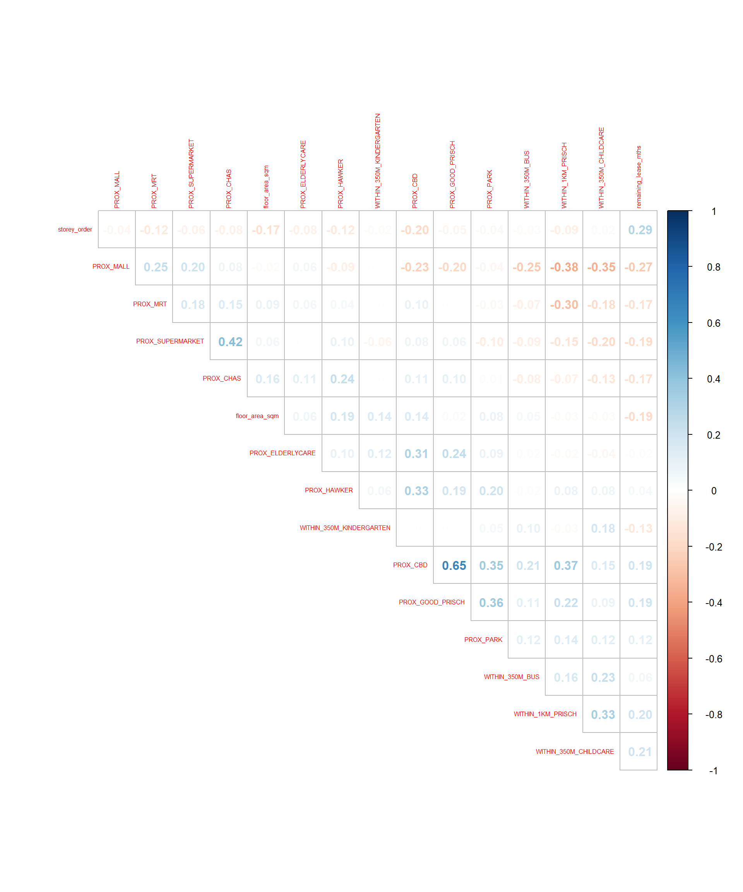

pacman::p_load(sf, spdep, GWmodel, SpatialML,
tmap, rsample, Metrics, tidyverse)Hands-on Exercise 8: Geographically Weighted Predictive Modelling
1 Overview: Geographically Weighted Predictive Models
Predictive modelling employs statistical learning or machine learning techniques to forecast outcomes, often targeting future events. These models are calibrated using a set of known outcomes and predictors (or variables).
Geospatial predictive modelling is based on the idea that the events being predicted are spatially constrained, meaning their distribution is not random or uniform across space. When working with geographically referenced data, factors such as infrastructure, sociocultural elements, and topography influence where events occur. Geospatial predictive modelling aims to explain these spatial constraints and influences by correlating past event locations with environmental factors that shape their distribution.
1.1 Learning Outcomes
In this hands-on exercise, the goal is to learn how to build predictive models using geographical random forest method. By the end of this hands-on exercise, it would have helped to acquire the skills of:
- preparing training and test data sets by using appropriate data sampling methods,
- calibrating predictive models by using both geospatial statistical learning and machine learning methods,
- comparing and selecting the best model for predicting the future outcome,
- predicting the future outcomes by using the best model calibrated.
2 The Data
- Aspatial dataset:
- HDB Resale data: a list of HDB resale transacted prices in Singapore from Jan 2017 onwards. It is in csv format which can be downloaded from Data.gov.sg.
- Geospatial dataset:
- MP14_SUBZONE_WEB_PL: a polygon feature data providing information of URA 2014 Master Plan Planning Subzone boundary data. It is in ESRI shapefile format. This data set was also downloaded from Data.gov.sg
- Locational factors with geographic coordinates:
- Downloaded from Data.gov.sg.
- Eldercare data is a list of eldercares in Singapore. It is in shapefile format.
- Hawker Centre data is a list of hawker centres in Singapore. It is in geojson format.
- Parks data is a list of parks in Singapore. It is in geojson format.
- Supermarket data is a list of supermarkets in Singapore. It is in geojson format.
- CHAS clinics data is a list of CHAS clinics in Singapore. It is in geojson format.
- Childcare service data is a list of childcare services in Singapore. It is in geojson format.
- Kindergartens data is a list of kindergartens in Singapore. It is in geojson format.
- Downloaded from Datamall.lta.gov.sg.
- MRT data is a list of MRT/LRT stations in Singapore with the station names and codes. It is in shapefile format.
- Bus stops data is a list of bus stops in Singapore. It is in shapefile format.
- Downloaded from Data.gov.sg.
- Locational factors without geographic coordinates:
- Downloaded from Data.gov.sg.
- Primary school data is extracted from the list on General information of schools from data.gov portal. It is in csv format.
- Retrieved/Scraped from other sources
- CBD coordinates obtained from Google.
- Shopping malls data is a list of Shopping malls in Singapore obtained from Wikipedia.
- Good primary schools is a list of primary schools that are ordered in ranking in terms of popularity and this can be found at Local Salary Forum.
- Downloaded from Data.gov.sg.
3 Installing and Loading R Packages
The code chunk below performs 3 tasks:
- A list of all the R packages required to accomplish this exercise will be called.
- Check if R packages or package have been installed in R, otherwise they will be installed.
- After all the R packages have been installed, they will be loaded into the R environment.
4 Preparing Data
4.1 Reading data file to rds
The code chunk below is used to read the input data sets. It is in simple feature data frame.
mdata <- read_rds("data/mdata.rds")4.2 Data Sampling
The dataset is divided into training (65%) and testing (35%) subsets using the initial_split() function from the rsample package, part of the tidymodels suite in R. This split supports model training and evaluation while adhering to best practices for data analysis.
set.seed(1234)
resale_split <- initial_split(mdata,
prop = 6.5/10,)
train_data <- training(resale_split)
test_data <- testing(resale_split)The code chunk below is used to save the training and test data into rds format for ease of retrieval.
write_rds(train_data, "data/model/train_data.rds")
write_rds(test_data, "data/model/test_data.rds")5 Computing Correlation Matrix
Before loading predictors into a predictive model, it’s best practice to check for multicollinearity using a correlation matrix. This helps identify highly correlated predictors that could distort model accuracy.
mdata_nogeo <- mdata %>%
st_drop_geometry()
corrplot::corrplot(cor(mdata_nogeo[, 2:17]),
diag = FALSE,
order = "AOE",
tl.pos = "td",
tl.cex = 0.5,
method = "number",
type = "upper")
Note
The correlation matrix above shows that all the correlation values are below 0.8. Hence, there is no sign of multicollinearity observed.
6 Retriving the Stored Data
The training and testing datasets that were stored earlier are now retrieved.
train_data <- read_rds("data/model/train_data.rds")
test_data <- read_rds("data/model/test_data.rds")7 Building a non-spatial multiple linear regression
price_mlr <- lm(resale_price ~ floor_area_sqm +
storey_order + remaining_lease_mths +
PROX_CBD + PROX_ELDERLYCARE + PROX_HAWKER +
PROX_MRT + PROX_PARK + PROX_MALL +
PROX_SUPERMARKET + WITHIN_350M_KINDERGARTEN +
WITHIN_350M_CHILDCARE + WITHIN_350M_BUS +
WITHIN_1KM_PRISCH,
data = train_data)
summary(price_mlr)
Call:
lm(formula = resale_price ~ floor_area_sqm + storey_order + remaining_lease_mths +
PROX_CBD + PROX_ELDERLYCARE + PROX_HAWKER + PROX_MRT + PROX_PARK +
PROX_MALL + PROX_SUPERMARKET + WITHIN_350M_KINDERGARTEN +
WITHIN_350M_CHILDCARE + WITHIN_350M_BUS + WITHIN_1KM_PRISCH,
data = train_data)
Residuals:
Min 1Q Median 3Q Max
-205193 -39120 -1930 36545 472355
Coefficients:
Estimate Std. Error t value Pr(>|t|)
(Intercept) 107601.073 10601.261 10.150 < 2e-16 ***
floor_area_sqm 2780.698 90.579 30.699 < 2e-16 ***
storey_order 14299.298 339.115 42.167 < 2e-16 ***
remaining_lease_mths 344.490 4.592 75.027 < 2e-16 ***
PROX_CBD -16930.196 201.254 -84.124 < 2e-16 ***
PROX_ELDERLYCARE -14441.025 994.867 -14.516 < 2e-16 ***
PROX_HAWKER -19265.648 1273.597 -15.127 < 2e-16 ***
PROX_MRT -32564.272 1744.232 -18.670 < 2e-16 ***
PROX_PARK -5712.625 1483.885 -3.850 0.000119 ***
PROX_MALL -14717.388 2007.818 -7.330 2.47e-13 ***
PROX_SUPERMARKET -26881.938 4189.624 -6.416 1.46e-10 ***
WITHIN_350M_KINDERGARTEN 8520.472 632.812 13.464 < 2e-16 ***
WITHIN_350M_CHILDCARE -4510.650 354.015 -12.741 < 2e-16 ***
WITHIN_350M_BUS 813.493 222.574 3.655 0.000259 ***
WITHIN_1KM_PRISCH -8010.834 491.512 -16.298 < 2e-16 ***
---
Signif. codes: 0 '***' 0.001 '**' 0.01 '*' 0.05 '.' 0.1 ' ' 1
Residual standard error: 61650 on 10320 degrees of freedom
Multiple R-squared: 0.7373, Adjusted R-squared: 0.737
F-statistic: 2069 on 14 and 10320 DF, p-value: < 2.2e-16The non-spatial multiple linear regression is then saved in rds file format for purposes of easy retrival when needed.
write_rds(price_mlr, "data/model/price_mlr.rds" ) 8 gwr predictive method
In this section, we will learn how to calibrate a model to predict HDB resale prices by using the geographically weighted regression method of GWmodel package.
8.1 Converting the training data from sf data.frame to SpatialPointDataFrame
train_data_sp <- as_Spatial(train_data)
train_data_spclass : SpatialPointsDataFrame
features : 10335
extent : 11597.31, 42623.63, 28217.39, 48741.06 (xmin, xmax, ymin, ymax)
crs : +proj=tmerc +lat_0=1.36666666666667 +lon_0=103.833333333333 +k=1 +x_0=28001.642 +y_0=38744.572 +ellps=WGS84 +towgs84=0,0,0,0,0,0,0 +units=m +no_defs
variables : 17
names : resale_price, floor_area_sqm, storey_order, remaining_lease_mths, PROX_CBD, PROX_ELDERLYCARE, PROX_HAWKER, PROX_MRT, PROX_PARK, PROX_GOOD_PRISCH, PROX_MALL, PROX_CHAS, PROX_SUPERMARKET, WITHIN_350M_KINDERGARTEN, WITHIN_350M_CHILDCARE, ...
min values : 218000, 74, 1, 555, 0.999393538715878, 1.98943787433087e-08, 0.0333358643817954, 0.0220407324774434, 0.0441643212802781, 0.0652540365486641, 0, 6.20621206270077e-09, 1.21715176356525e-07, 0, 0, ...
max values : 1186888, 133, 17, 1164, 19.6500691667807, 3.30163731686804, 2.86763031236184, 2.13060636038504, 2.41313695915468, 10.6223726149914, 2.27100643784442, 0.808332738794272, 1.57131703651196, 7, 20, ... 8.2 Computing adaptive bandwidth for the training data
Next, bw.gwr() of GWmodel package will be used to determine the optimal bandwidth to be used.
Note
The code chunk below is used to determine the adaptive bandwidth. Additionally, CV method is used to determine the optimal bandwidth.
bw_adaptive <- bw.gwr(resale_price ~ floor_area_sqm +
storey_order + remaining_lease_mths +
PROX_CBD + PROX_ELDERLYCARE + PROX_HAWKER +
PROX_MRT + PROX_PARK + PROX_MALL +
PROX_SUPERMARKET + WITHIN_350M_KINDERGARTEN +
WITHIN_350M_CHILDCARE + WITHIN_350M_BUS +
WITHIN_1KM_PRISCH,
data = train_data_sp,
approach = "CV",
kernel = "gaussian",
adaptive = TRUE,
longlat = FALSE)Take a cup of tea and have a break, it will take a few minutes.
-----A kind suggestion from GWmodel development group
Adaptive bandwidth: 6395 CV score: 3.60536e+13
Adaptive bandwidth: 3960 CV score: 3.320316e+13
Adaptive bandwidth: 2455 CV score: 2.928339e+13
Adaptive bandwidth: 1524 CV score: 2.550957e+13
Adaptive bandwidth: 950 CV score: 1.95632e+13
Adaptive bandwidth: 593 CV score: 1.58347e+13
Adaptive bandwidth: 375 CV score: 1.310042e+13
Adaptive bandwidth: 237 CV score: 1.113152e+13
Adaptive bandwidth: 155 CV score: 9.572037e+12
Adaptive bandwidth: 101 CV score: 8.457003e+12
Adaptive bandwidth: 71 CV score: 7.605058e+12
Adaptive bandwidth: 49 CV score: 6.965752e+12
Adaptive bandwidth: 38 CV score: 8.249935e+12
Adaptive bandwidth: 58 CV score: 7.275234e+12
Adaptive bandwidth: 45 CV score: 6.871439e+12
Adaptive bandwidth: 41 CV score: 6.7928e+12
Adaptive bandwidth: 40 CV score: 6.780447e+12
Adaptive bandwidth: 38 CV score: 8.249935e+12
Adaptive bandwidth: 40 CV score: 6.780447e+12 The result above shows that 40 neighbour points will be the optimal bandwidth to be used if adaptive bandwidth is used for this data set.
The result is then saved as rds format as well.
write_rds(bw_adaptive, "data/model/bw_adaptive.rds")8.3 Constructing the adaptive bandwidth gwr model
The code chunk below will call the saved bandwidth by using the code chunk below.
bw_adaptive <- read_rds("data/model/bw_adaptive.rds")The code chunk below is then used to calibrate the gwr-based hedonic pricing model by using adaptive bandwidth and Gaussian kernel as shown in the code chunk below.
Note
The use of the same kernel and adaptive arguments in both bw.gwr() and gwr.basic() maintains consistency in the model’s weighting and spatial adaptiveness. The gaussian kernel ensures smooth distance-based weighting, while adaptive = TRUE adjusts the bandwidth to account for the varying density of spatial observations. This setup allows for a more accurate fit in geographically weighted regression (GWR), especially in heterogeneous spatial data, as it adapts locally to data point distribution.
gwr_adaptive <- gwr.basic(formula = resale_price ~
floor_area_sqm + storey_order +
remaining_lease_mths + PROX_CBD +
PROX_ELDERLYCARE + PROX_HAWKER +
PROX_MRT + PROX_PARK + PROX_MALL +
PROX_SUPERMARKET + WITHIN_350M_KINDERGARTEN +
WITHIN_350M_CHILDCARE + WITHIN_350M_BUS +
WITHIN_1KM_PRISCH,
data = train_data_sp,
bw = bw_adaptive,
kernel = 'gaussian',
adaptive = TRUE,
longlat = FALSE)The code chunk below will be used to save the model in rds format for future use similar to the steps above to prevent having to re-run the code chunk above which can be time consuming.
write_rds(gwr_adaptive, "data/model/gwr_adaptive.rds")8.4 Retrieving gwr output object
The code chunk below will be used to retrieve the saved gwr model object in the previous section.
gwr_adaptive <- read_rds("data/model/gwr_adaptive.rds")The code chunk below is used to display the model output.
gwr_adaptive ***********************************************************************
* Package GWmodel *
***********************************************************************
Program starts at: 2024-10-31 16:12:22.509546
Call:
gwr.basic(formula = resale_price ~ floor_area_sqm + storey_order +
remaining_lease_mths + PROX_CBD + PROX_ELDERLYCARE + PROX_HAWKER +
PROX_MRT + PROX_PARK + PROX_MALL + PROX_SUPERMARKET + WITHIN_350M_KINDERGARTEN +
WITHIN_350M_CHILDCARE + WITHIN_350M_BUS + WITHIN_1KM_PRISCH,
data = train_data_sp, bw = bw_adaptive, kernel = "gaussian",
adaptive = TRUE, longlat = FALSE)
Dependent (y) variable: resale_price
Independent variables: floor_area_sqm storey_order remaining_lease_mths PROX_CBD PROX_ELDERLYCARE PROX_HAWKER PROX_MRT PROX_PARK PROX_MALL PROX_SUPERMARKET WITHIN_350M_KINDERGARTEN WITHIN_350M_CHILDCARE WITHIN_350M_BUS WITHIN_1KM_PRISCH
Number of data points: 10335
***********************************************************************
* Results of Global Regression *
***********************************************************************
Call:
lm(formula = formula, data = data)
Residuals:
Min 1Q Median 3Q Max
-205193 -39120 -1930 36545 472355
Coefficients:
Estimate Std. Error t value Pr(>|t|)
(Intercept) 107601.073 10601.261 10.150 < 2e-16 ***
floor_area_sqm 2780.698 90.579 30.699 < 2e-16 ***
storey_order 14299.298 339.115 42.167 < 2e-16 ***
remaining_lease_mths 344.490 4.592 75.027 < 2e-16 ***
PROX_CBD -16930.196 201.254 -84.124 < 2e-16 ***
PROX_ELDERLYCARE -14441.025 994.867 -14.516 < 2e-16 ***
PROX_HAWKER -19265.648 1273.597 -15.127 < 2e-16 ***
PROX_MRT -32564.272 1744.232 -18.670 < 2e-16 ***
PROX_PARK -5712.625 1483.885 -3.850 0.000119 ***
PROX_MALL -14717.388 2007.818 -7.330 2.47e-13 ***
PROX_SUPERMARKET -26881.938 4189.624 -6.416 1.46e-10 ***
WITHIN_350M_KINDERGARTEN 8520.472 632.812 13.464 < 2e-16 ***
WITHIN_350M_CHILDCARE -4510.650 354.015 -12.741 < 2e-16 ***
WITHIN_350M_BUS 813.493 222.574 3.655 0.000259 ***
WITHIN_1KM_PRISCH -8010.834 491.512 -16.298 < 2e-16 ***
---Significance stars
Signif. codes: 0 '***' 0.001 '**' 0.01 '*' 0.05 '.' 0.1 ' ' 1
Residual standard error: 61650 on 10320 degrees of freedom
Multiple R-squared: 0.7373
Adjusted R-squared: 0.737
F-statistic: 2069 on 14 and 10320 DF, p-value: < 2.2e-16
***Extra Diagnostic information
Residual sum of squares: 3.922202e+13
Sigma(hat): 61610.08
AIC: 257320.2
AICc: 257320.3
BIC: 247249
***********************************************************************
* Results of Geographically Weighted Regression *
***********************************************************************
*********************Model calibration information*********************
Kernel function: gaussian
Adaptive bandwidth: 40 (number of nearest neighbours)
Regression points: the same locations as observations are used.
Distance metric: Euclidean distance metric is used.
****************Summary of GWR coefficient estimates:******************
Min. 1st Qu. Median 3rd Qu.
Intercept -3.2478e+08 -4.7727e+05 -8.3004e+03 5.5025e+05
floor_area_sqm -2.8714e+04 1.4475e+03 2.3011e+03 3.3900e+03
storey_order 3.3186e+03 8.5899e+03 1.0826e+04 1.3397e+04
remaining_lease_mths -1.4431e+03 2.6063e+02 3.9048e+02 5.2865e+02
PROX_CBD -1.0837e+07 -5.7697e+04 -1.3787e+04 2.6552e+04
PROX_ELDERLYCARE -3.2195e+07 -4.0643e+04 1.0562e+04 6.1054e+04
PROX_HAWKER -2.3985e+08 -5.1365e+04 3.0026e+03 6.4287e+04
PROX_MRT -1.1632e+07 -1.0488e+05 -4.9373e+04 5.1037e+03
PROX_PARK -6.5961e+06 -4.8671e+04 -8.8128e+02 5.3498e+04
PROX_MALL -1.8112e+07 -7.4238e+04 -1.3982e+04 4.9779e+04
PROX_SUPERMARKET -4.5761e+06 -6.3461e+04 -1.7429e+04 3.5616e+04
WITHIN_350M_KINDERGARTEN -4.1823e+05 -6.0040e+03 9.0209e+01 4.7127e+03
WITHIN_350M_CHILDCARE -1.0273e+05 -2.2375e+03 2.6668e+02 2.6388e+03
WITHIN_350M_BUS -1.1757e+05 -1.4719e+03 1.1626e+02 1.7584e+03
WITHIN_1KM_PRISCH -6.6465e+05 -5.5959e+03 2.6916e+02 5.7500e+03
Max.
Intercept 1.6493e+08
floor_area_sqm 5.0907e+04
storey_order 2.9537e+04
remaining_lease_mths 1.8119e+03
PROX_CBD 2.2411e+07
PROX_ELDERLYCARE 8.2444e+07
PROX_HAWKER 5.9654e+06
PROX_MRT 2.0189e+08
PROX_PARK 1.5188e+07
PROX_MALL 1.0443e+07
PROX_SUPERMARKET 3.8330e+06
WITHIN_350M_KINDERGARTEN 6.6799e+05
WITHIN_350M_CHILDCARE 1.0802e+05
WITHIN_350M_BUS 3.7313e+04
WITHIN_1KM_PRISCH 5.0231e+05
************************Diagnostic information*************************
Number of data points: 10335
Effective number of parameters (2trace(S) - trace(S'S)): 1730.101
Effective degrees of freedom (n-2trace(S) + trace(S'S)): 8604.899
AICc (GWR book, Fotheringham, et al. 2002, p. 61, eq 2.33): 238871.9
AIC (GWR book, Fotheringham, et al. 2002,GWR p. 96, eq. 4.22): 237036.9
BIC (GWR book, Fotheringham, et al. 2002,GWR p. 61, eq. 2.34): 238209.1
Residual sum of squares: 4.829191e+12
R-square value: 0.967657
Adjusted R-square value: 0.9611534
***********************************************************************
Program stops at: 2024-10-31 16:13:26.230757 8.5 Converting the test data from sf data.frame to SpatialPointDataFrame
test_data_sp <- test_data %>%
as_Spatial()
test_data_spclass : SpatialPointsDataFrame
features : 5566
extent : 11597.31, 42623.63, 28287.8, 48669.59 (xmin, xmax, ymin, ymax)
crs : +proj=tmerc +lat_0=1.36666666666667 +lon_0=103.833333333333 +k=1 +x_0=28001.642 +y_0=38744.572 +ellps=WGS84 +towgs84=0,0,0,0,0,0,0 +units=m +no_defs
variables : 17
names : resale_price, floor_area_sqm, storey_order, remaining_lease_mths, PROX_CBD, PROX_ELDERLYCARE, PROX_HAWKER, PROX_MRT, PROX_PARK, PROX_GOOD_PRISCH, PROX_MALL, PROX_CHAS, PROX_SUPERMARKET, WITHIN_350M_KINDERGARTEN, WITHIN_350M_CHILDCARE, ...
min values : 230888, 74, 1, 546, 1.00583660772922, 3.34897933104965e-07, 0.0474019664161957, 0.0414043955932523, 0.0502664084494264, 0.0907500295577619, 0, 4.55547870890763e-09, 1.21715176356525e-07, 0, 0, ...
max values : 1050000, 138, 14, 1151, 19.632402730488, 3.30163731686804, 2.83106651960209, 2.13060636038504, 2.41313695915468, 10.6169590126272, 2.26056404492346, 0.79249074802552, 1.53786629004208, 7, 16, ... 8.6 Computing adaptive bandwidth for the test data
bw_test_adaptive <- bw.gwr(resale_price ~ floor_area_sqm +
storey_order + remaining_lease_mths +
PROX_CBD + PROX_ELDERLYCARE + PROX_HAWKER +
PROX_MRT + PROX_PARK + PROX_MALL +
PROX_SUPERMARKET + WITHIN_350M_KINDERGARTEN +
WITHIN_350M_CHILDCARE + WITHIN_350M_BUS +
WITHIN_1KM_PRISCH,
data = test_data_sp,
approach = "CV",
kernel = "gaussian",
adaptive = TRUE,
longlat = FALSE)Take a cup of tea and have a break, it will take a few minutes.
-----A kind suggestion from GWmodel development group
Adaptive bandwidth: 3447 CV score: 1.902155e+13
Adaptive bandwidth: 2138 CV score: 1.752645e+13
Adaptive bandwidth: 1328 CV score: 1.556299e+13
Adaptive bandwidth: 828 CV score: 1.357498e+13
Adaptive bandwidth: 518 CV score: 1.030751e+13
Adaptive bandwidth: 327 CV score: 8.348364e+12
Adaptive bandwidth: 208 CV score: 6.860544e+12
Adaptive bandwidth: 135 CV score: 5.969504e+12
Adaptive bandwidth: 89 CV score: 5.242221e+12
Adaptive bandwidth: 62 CV score: 4.742767e+12
Adaptive bandwidth: 43 CV score: 4.357839e+12
Adaptive bandwidth: 34 CV score: 4.125848e+12
Adaptive bandwidth: 25 CV score: 4.04299e+12
Adaptive bandwidth: 23 CV score: 1.549626e+13
Adaptive bandwidth: 30 CV score: 4.074906e+12
Adaptive bandwidth: 25 CV score: 4.04299e+12 The results above indicates that an adaptive bandwidth of 25 nearest neighbors yields the lowest cross-validation (CV) score of (4.04299e+12), making it the optimal bandwidth for this test dataset when using adaptive bandwidth selection. This value suggests that 25 nearby data points provide the best balance between model fit and generalization for the geographic weighting applied in this test data’s GWR model.
The result is then saved as rds format as well.
write_rds(bw_test_adaptive, "data/model/bw_test_adaptive.rds")The code chunk below will call the saved bandwidth by using the code chunk below.
bw_test_adaptive <- read_rds("data/model/bw_test_adaptive.rds")8.7 Computing predicted values of the test data
gwr_pred <- gwr.predict(formula = resale_price ~
floor_area_sqm + storey_order +
remaining_lease_mths + PROX_CBD +
PROX_ELDERLYCARE + PROX_HAWKER +
PROX_MRT + PROX_PARK + PROX_MALL +
PROX_SUPERMARKET + WITHIN_350M_KINDERGARTEN +
WITHIN_350M_CHILDCARE + WITHIN_350M_BUS +
WITHIN_1KM_PRISCH,
data = train_data_sp,
predictdata = test_data_sp,
bw = 40,
kernel = 'gaussian',
adaptive = TRUE,
longlat = FALSE)9 Preparing coordinates data
9.1 Extracting coordinates data
The code chunk below extracts the x,y coordinates from the full, training and test data sets respectively.
coords <- st_coordinates(mdata)
coords_train <- st_coordinates(train_data)
coords_test <- st_coordinates(test_data)Before moving on, we will write all the output into rds for future usage.
coords_train <- write_rds(coords_train, "data/model/coords_train.rds" )
coords_test <- write_rds(coords_test, "data/model/coords_test.rds" )9.2 Dropping geometry field
We will drop the geometry column of the sf data.frame by using st_drop_geometry() of sf package.
train_data <- train_data %>%
st_drop_geometry()10 Calibrating Random Forest Model
In this section, it will calibrate a model to predict HDB resale price by using random forest function of ranger package.
set.seed(1234)
rf <- ranger(resale_price ~ floor_area_sqm + storey_order +
remaining_lease_mths + PROX_CBD + PROX_ELDERLYCARE +
PROX_HAWKER + PROX_MRT + PROX_PARK + PROX_MALL +
PROX_SUPERMARKET + WITHIN_350M_KINDERGARTEN +
WITHIN_350M_CHILDCARE + WITHIN_350M_BUS +
WITHIN_1KM_PRISCH,
data = train_data)
rfRanger result
Call:
ranger(resale_price ~ floor_area_sqm + storey_order + remaining_lease_mths + PROX_CBD + PROX_ELDERLYCARE + PROX_HAWKER + PROX_MRT + PROX_PARK + PROX_MALL + PROX_SUPERMARKET + WITHIN_350M_KINDERGARTEN + WITHIN_350M_CHILDCARE + WITHIN_350M_BUS + WITHIN_1KM_PRISCH, data = train_data)
Type: Regression
Number of trees: 500
Sample size: 10335
Number of independent variables: 14
Mtry: 3
Target node size: 5
Variable importance mode: none
Splitrule: variance
OOB prediction error (MSE): 728602496
R squared (OOB): 0.9495728 The output is saved into rds for future usage.
write_rds(rf, "data/model/rf.rds")rf <- read_rds("data/model/rf.rds")
rfRanger result
Call:
ranger(resale_price ~ floor_area_sqm + storey_order + remaining_lease_mths + PROX_CBD + PROX_ELDERLYCARE + PROX_HAWKER + PROX_MRT + PROX_PARK + PROX_MALL + PROX_SUPERMARKET + WITHIN_350M_KINDERGARTEN + WITHIN_350M_CHILDCARE + WITHIN_350M_BUS + WITHIN_1KM_PRISCH, data = train_data)
Type: Regression
Number of trees: 500
Sample size: 10335
Number of independent variables: 14
Mtry: 3
Target node size: 5
Variable importance mode: none
Splitrule: variance
OOB prediction error (MSE): 728602496
R squared (OOB): 0.9495728 11 Calibrating Geographical Random Forest Model
In this section, the steps involved illustrate how to calibrate a model to predict HDB resale price by using grf() of SpatialML package.
11.1 Calibrating using training data
The code chunk below calibrates a geographic random forest model by using grf() of SpatialML package.
set.seed(1234)
gwRF_adaptive <- grf(formula = resale_price ~ floor_area_sqm + storey_order +
remaining_lease_mths + PROX_CBD + PROX_ELDERLYCARE +
PROX_HAWKER + PROX_MRT + PROX_PARK + PROX_MALL +
PROX_SUPERMARKET + WITHIN_350M_KINDERGARTEN +
WITHIN_350M_CHILDCARE + WITHIN_350M_BUS +
WITHIN_1KM_PRISCH,
dframe = train_data,
bw = 55,
kernel = "adaptive",
coords = coords_train)
Number of Observations: 10335Number of Independent Variables: 14Kernel: Adaptive
Neightbours: 55
--------------- Global ML Model Summary ---------------Ranger result
Call:
ranger(resale_price ~ floor_area_sqm + storey_order + remaining_lease_mths + PROX_CBD + PROX_ELDERLYCARE + PROX_HAWKER + PROX_MRT + PROX_PARK + PROX_MALL + PROX_SUPERMARKET + WITHIN_350M_KINDERGARTEN + WITHIN_350M_CHILDCARE + WITHIN_350M_BUS + WITHIN_1KM_PRISCH, data = train_data, num.trees = 500, mtry = 4, importance = "impurity", num.threads = NULL)
Type: Regression
Number of trees: 500
Sample size: 10335
Number of independent variables: 14
Mtry: 4
Target node size: 5
Variable importance mode: impurity
Splitrule: variance
OOB prediction error (MSE): 700081018
R squared (OOB): 0.9515468
Importance: floor_area_sqm storey_order remaining_lease_mths
7.376510e+12 1.413229e+13 2.991844e+13
PROX_CBD PROX_ELDERLYCARE PROX_HAWKER
5.312697e+13 7.017513e+12 5.506719e+12
PROX_MRT PROX_PARK PROX_MALL
7.446857e+12 4.825986e+12 4.173165e+12
PROX_SUPERMARKET WITHIN_350M_KINDERGARTEN WITHIN_350M_CHILDCARE
2.879598e+12 1.028775e+12 1.701318e+12
WITHIN_350M_BUS WITHIN_1KM_PRISCH
1.564038e+12 7.214027e+12
Mean Square Error (Not OOB): 173279991.32R-squared (Not OOB) %: 98.801AIC (Not OOB): 196089.283AICc (Not OOB): 196089.33
--------------- Local Model Summary ---------------
Residuals OOB: Min. 1st Qu. Median Mean 3rd Qu. Max.
-236112.0 -13033.7 444.4 593.8 14831.5 358041.7
Residuals Predicted (Not OOB): Min. 1st Qu. Median Mean 3rd Qu. Max.
-79279.83 -3510.70 54.56 50.98 3909.85 83074.08
Local Variable Importance: Min Max Mean StD
floor_area_sqm 0 401562922035 18210850992 41426270899
storey_order 302736445 243728744368 16368419468 23620589843
remaining_lease_mths 696564138 546463600727 34119912443 70328183398
PROX_CBD 55173040 382484896335 12154563393 29293290548
PROX_ELDERLYCARE 45182031 344081962746 10597657883 24546405941
PROX_HAWKER 43516026 342597797419 10551807020 23408387903
PROX_MRT 54234551 299075025906 9873129985 21055852211
PROX_PARK 49919822 322633843469 9353956995 19517077658
PROX_MALL 43296133 433263607933 11247374493 27537334970
PROX_SUPERMARKET 52665827 417310417234 10802122271 26572460731
WITHIN_350M_KINDERGARTEN 0 186468064682 2848177740 12928886968
WITHIN_350M_CHILDCARE 0 255236737234 5526292324 18109971102
WITHIN_350M_BUS 0 193828795378 4747552546 11886064288
WITHIN_1KM_PRISCH 0 178360608427 1778262602 7163381668
Mean squared error (OOB): 930426169.333R-squared (OOB) %: 93.56AIC (OOB): 213459.669AICc (OOB): 213459.716Mean squared error Predicted (Not OOB): 73859413.696R-squared Predicted (Not OOB) %: 99.489AIC Predicted (Not OOB): 187276.161AICc Predicted (Not OOB): 187276.208
Calculation time (in seconds): 4.5763Saving the model output by using the code chunk below.
write_rds(gwRF_adaptive, "data/model/gwRF_adaptive.rds")The code chunk below can then be used to retrieve the saved model in future.
gwRF_adaptive <- read_rds("data/model/gwRF_adaptive.rds")11.2 Predicting by using test data
11.2.1 Preparing the test data
The code chunk below is used to combine the test data with its corresponding coordinates data; alongside dropping of the geometry.
test_data <- cbind(test_data, coords_test) %>%
st_drop_geometry()11.2.2 Predicting with test data
Next, predict.grf() of spatialML package will be used to predict the resale value of HDB flats by using the test data and gwRF_adaptive model calibrated earlier.
gwRF_pred <- predict.grf(gwRF_adaptive,
test_data,
x.var.name = "X",
y.var.name = "Y",
local.w = 1,
global.w = 0)The output is saved into rds file for future use.
GRF_pred <- write_rds(gwRF_pred, "data/model/GRF_pred.rds")11.2.3 Converting the predicting output into a data frame
The output of the predict.grf() is a vector of predicted values. It is advisable to convert it into a data frame for further visualisation and analysis.
The output is first saved as an rds file before being converted into a data frame from the code chunk below.
GRF_pred <- read_rds("data/model/GRF_pred.rds")
GRF_pred_df <- as.data.frame(GRF_pred)In the code chunk below, cbind() is used to append the predicted values onto the test_data.
test_data_p <- cbind(test_data, GRF_pred_df)write_rds(test_data_p, "data/model/test_data_p.rds")11.3 Calculating Root Mean Square Error
The calculation of root mean square error (RMSE) will allow us to measure how far predicted values are from observed values in a regression analysis. In the code chunk below, rmse() of Metrics package is used to compute the RMSE.
rmse(test_data_p$resale_price,
test_data_p$GRF_pred)[1] 27302.911.4 Visualising the predicted values
Alternatively, a scatter plot can be used to visualise the actual resale price and the predicted resale price by using the code chunk below.
ggplot(data = test_data_p,
aes(x = GRF_pred,
y = resale_price)) +
geom_point()
Note
A better predictive model should have the scatter point close to the diagonal line. The scatter plot can be also used to detect if any outliers in the model.